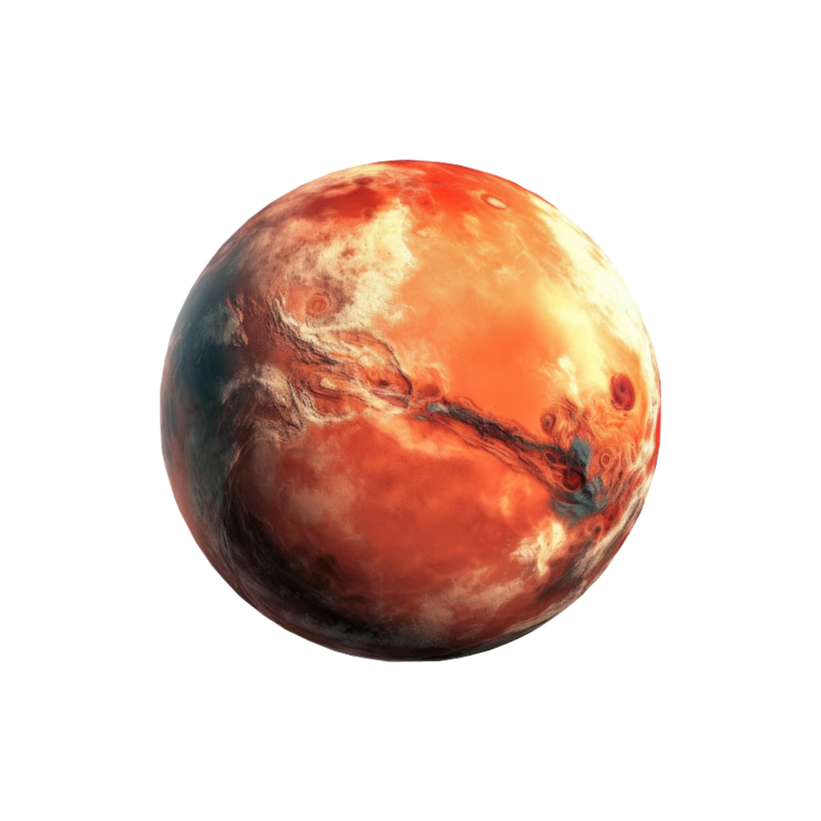

Mars

-
Mars posiada dwa księżyce - Fobosa i Deimosa. Deimos jest mniejszym
(12.6km średnicy ) od Fobosa (22,2km średnicy). Oby dwa zostały odkryte
przez amerykańskiego astronoma Asapha Halla.
-
Według badań, za około 50 milionów lat, Fobos zbliży się tak bardzo do
powierzchni Marsa, że albo spadnie na jego powierzchnię albo zostanie
rozerwany przez siły pływowe planety.
-
Średnia temperatura na marsie wynosi -63°C Amplituda temperatur na
powierzchni Marsa jest o wiele większa niż na Ziemi. Temperatury na
czerwonym globie wahają się pomiędzy -143°C a 35°C
- Rok na Marsie trwa 687 ziemskich dni.
-
Atmosfera Marsa jest ponad 100 razy rzadsza od ziemskiej. Składa się z
95.32% dwutlenku węgla, 2.7% azotu, 1.6% argonu, 0.13% tlenu i 0.08%
tlenku węgla. Dodatkowo w skład marsjańskiej atmosfery wchodzą jeszcze:
woda, tlenek azotu, neon, krypton i ksenon.
Powrót na stronę główną